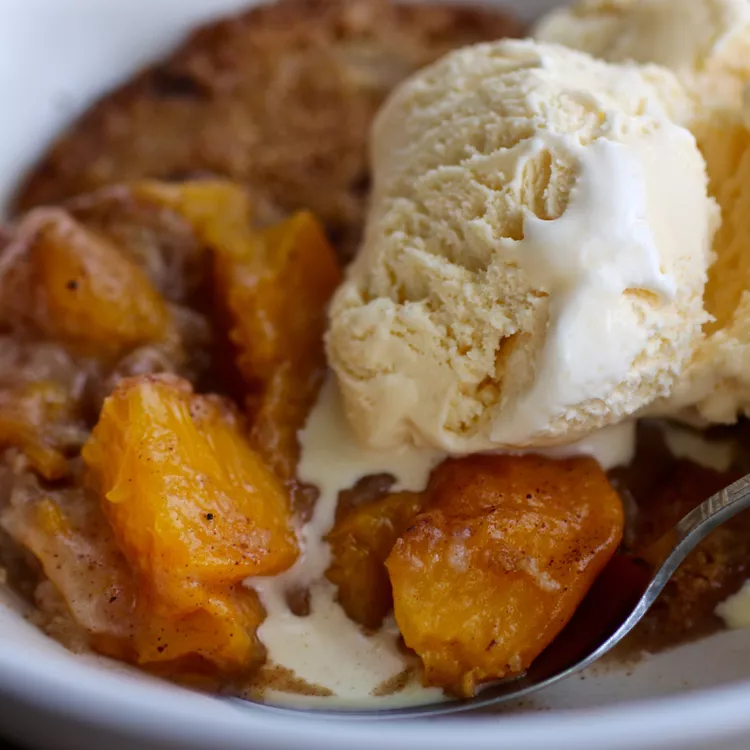

LASAGNA

Description
These roast beef and Cheddar sliders are so easy to put together, bake in just a few minutes, and are just as delicious as the fast-food favorite from your favorite roast beef restaurant. And you don't have to leave home.
Ingredients
- 4 tablespoons butter, melted, divided
- 1 (12 roll) package Hawaiian rolls, split in half horizontally
- 12 ounces deli roast beef
- 1/2 cup thin tangy BBQ sauce, such as Arby Original Sauce
- 1 cup Cheddar cheese sauce
- 1/4 teaspoon garlic powder
- 1/4 teaspoon onion powder
- 2 teaspoons everything bagel seasoning
Directions
Step 1
Preheat the oven to 350 degrees F (175 degrees C). Brush the bottom and sides
of a 9x13-inch baking dish with melted butter until lightly coated.
Step 2
Place bottom half of rolls in baking dish and top evenly with roast beef slices.
Drizzle BBQ sauce evenly over roast beef and dollop cheese sauce evenly over
the top. Place top roll halves on top.
Step 3
Stir together remaining butter, garlic powder, and onion powder and brush
evenly over bun tops.Sprinkle with bagel seasoning.
Step 4
Bake in the preheated oven until the center is warm and melted, and bread is
toasted and golden brown, 12 to 14 minutes.
Vegetarian Sliders
Description
These sliders are a quick and easy vegetarian appetizer or main dish.
They are filled with gooey mozzarella cheese, tomatoes, basil, and garlic.

Ingredients
- 1 (12 count) package Hawaiian bread rolls
- ½ cup marinara sauce
- 8 ounces grated mozzarella cheese
- 3 Roma tomatoes, sliced
- ¼ cup chopped fresh basil
- ¼ cup butter, melted
- 2 tablespoons grated Parmesan cheese
- 2 cloves roasted garlic, finely minced
- 2 teaspoons Italian seasoning
Directions
Step 1
Preheat the oven to 375 degrees F (190 degrees C). Grease a 9x13-inch pan.
Step 2
Cut the rolls in half. Set the bottom halves into the bottom of the prepared pan
and spread with marinara sauce. Place a layer of mozzarella cheese over the
marinara and add a layer of tomatoes over the cheese. Spread basil over the
tomatoes and add the top halves of the rolls.
Step 3
Combine melted butter, Parmesan cheese, garlic, and Italian seasoning in a
bowl; stir to combine. Brush over the tops of the sliders.
Step 4
Bake in the preheated oven until the insides are gooey and the tops are golden
brown, 10 to 15 minutes.